bonsai — camera 0
first, worst-splatfacto-png-mse
Source data/processed/canonical/bonsai/images_2/frame_eval_00000.png; resolution [1559, 1039]; crop XYXY [459, 260, 1099, 779]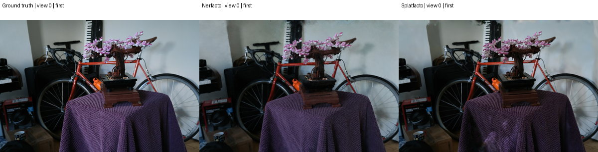
115 held-out views: first, worst PNG-MSE of each method, and upper median Nerfacto error. Deduplicated selection. PNG diagnostics do not replace upstream float metrics.
AI-authored technical analysis. Human approval and independent GPU replay remain pending. Original G-Core remains BLOCKED.
first, worst-splatfacto-png-mse
Source data/processed/canonical/bonsai/images_2/frame_eval_00000.png; resolution [1559, 1039]; crop XYXY [459, 260, 1099, 779]
worst-nerfacto-png-mse
Source data/processed/canonical/bonsai/images_2/frame_eval_00009.png; resolution [1559, 1039]; crop XYXY [459, 260, 1099, 779]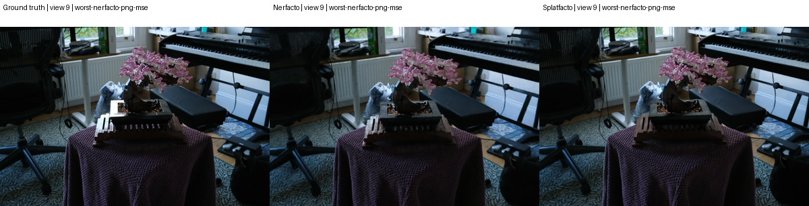
median-nerfacto-png-mse
Source data/processed/canonical/bonsai/images_2/frame_eval_00016.png; resolution [1559, 1039]; crop XYXY [459, 260, 1099, 779]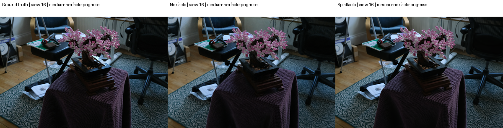
first
Source data/processed/canonical/custom-tea_sets_2/images_2/frame_eval_00000.png; resolution [359, 639]; crop XYXY [90, 160, 269, 479]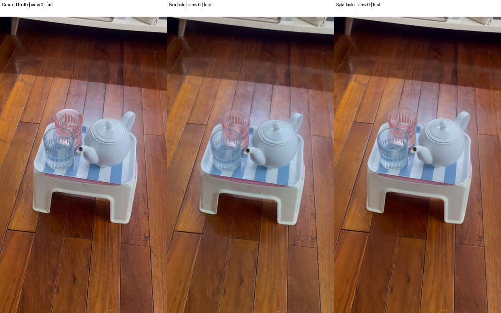
worst-nerfacto-png-mse
Source data/processed/canonical/custom-tea_sets_2/images_2/frame_eval_00010.png; resolution [359, 639]; crop XYXY [90, 160, 269, 479]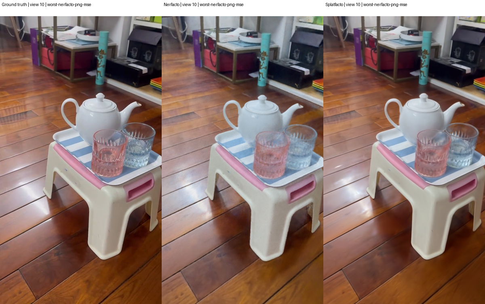
worst-splatfacto-png-mse
Source data/processed/canonical/custom-tea_sets_2/images_2/frame_eval_00013.png; resolution [359, 639]; crop XYXY [90, 160, 269, 479]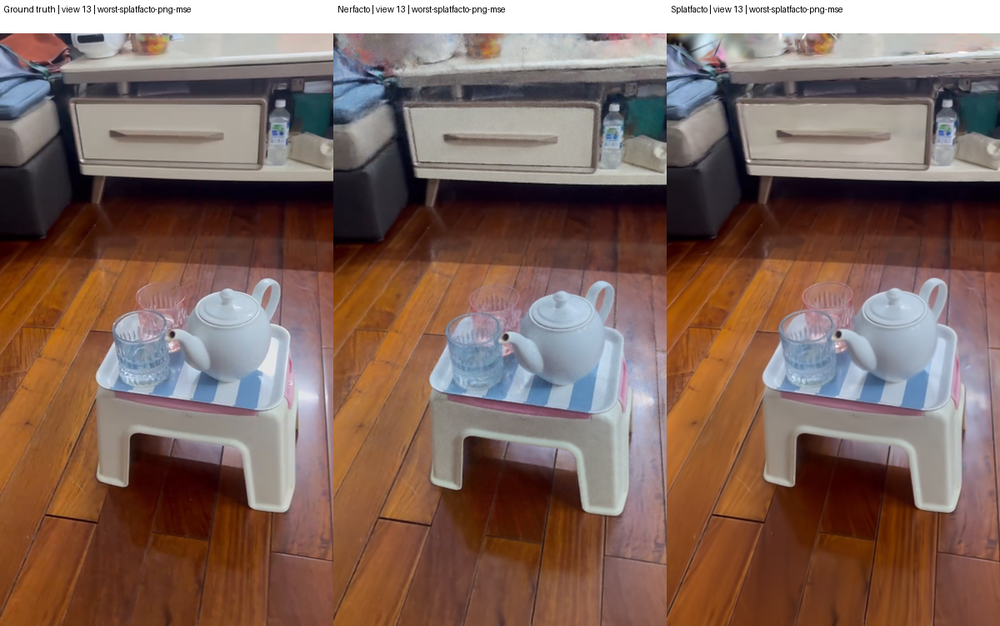
median-nerfacto-png-mse
Source data/processed/canonical/custom-tea_sets_2/images_2/frame_eval_00007.png; resolution [359, 639]; crop XYXY [90, 160, 269, 479]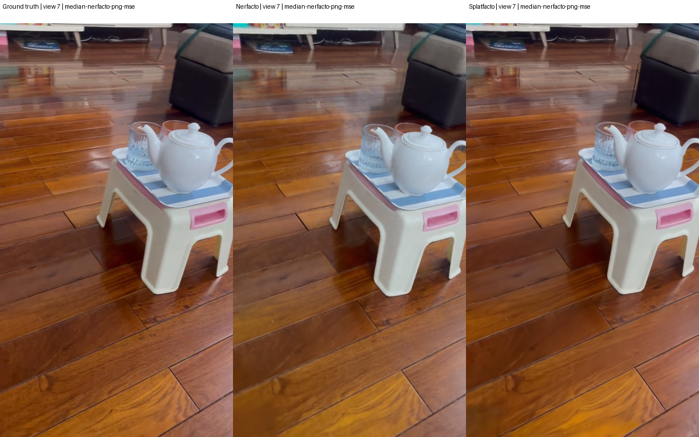
first
Source data/processed/canonical/garden/images_2/frame_eval_00000.png; resolution [2593, 1680]; crop XYXY [976, 520, 1616, 1160]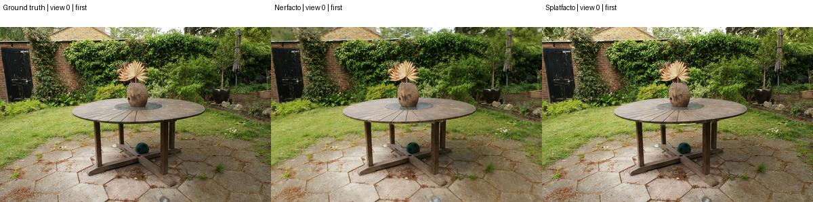
worst-nerfacto-png-mse, worst-splatfacto-png-mse
Source data/processed/canonical/garden/images_2/frame_eval_00004.png; resolution [2593, 1680]; crop XYXY [976, 520, 1616, 1160]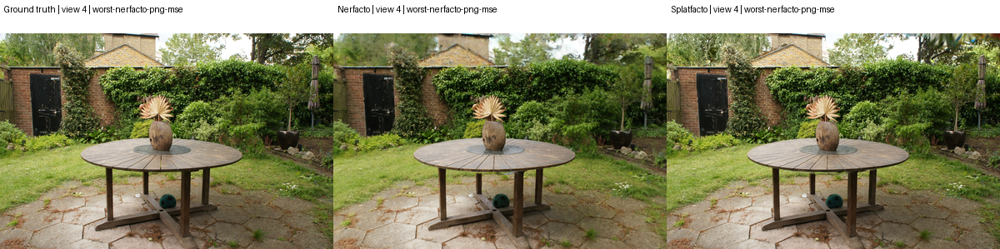
median-nerfacto-png-mse
Source data/processed/canonical/garden/images_2/frame_eval_00012.png; resolution [2593, 1680]; crop XYXY [976, 520, 1616, 1160]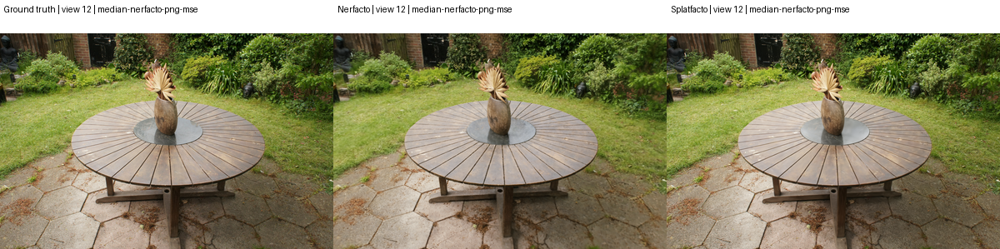
first
Source data/processed/canonical/room/images_2/frame_eval_00000.png; resolution [1557, 1037]; crop XYXY [458, 259, 1098, 777]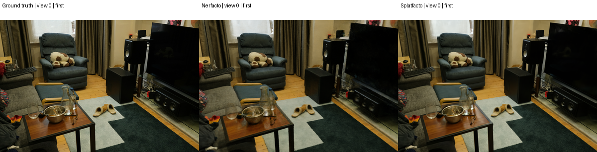
worst-nerfacto-png-mse
Source data/processed/canonical/room/images_2/frame_eval_00029.png; resolution [1557, 1037]; crop XYXY [458, 259, 1098, 777]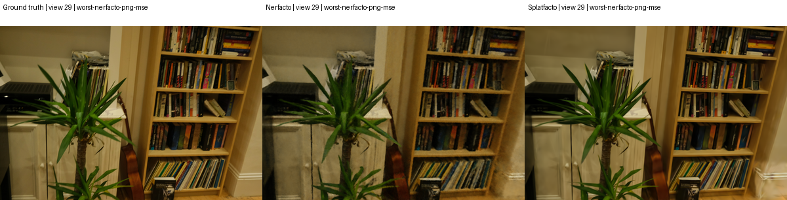
worst-splatfacto-png-mse
Source data/processed/canonical/room/images_2/frame_eval_00036.png; resolution [1557, 1037]; crop XYXY [458, 259, 1098, 777]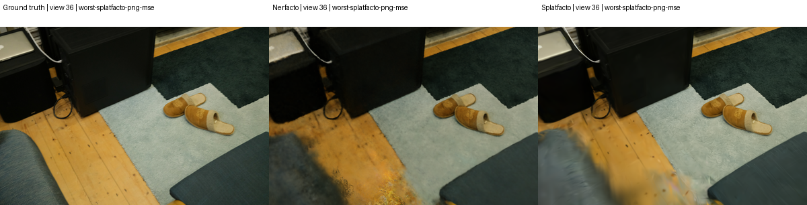
median-nerfacto-png-mse
Source data/processed/canonical/room/images_2/frame_eval_00002.png; resolution [1557, 1037]; crop XYXY [458, 259, 1098, 777]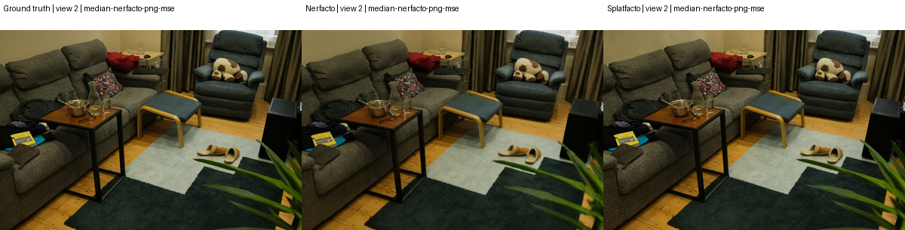